Растрова графіка
Растрова графіка складається з пікселів — дрібних точок, кожна з яких має власний колір. Такі зображення мають фіксовану роздільну здатність, тому при збільшенні можуть втрачати якість. Растрова графіка чудово підходить для фотографій, сканів і складних колірних градієнтів.
Приклади використання:
- Фото з камери
- Картини, малюнки, цифровий живопис
- Текстури в іграх
Популярні формати:
- JPG — менший розмір за рахунок стиснення, але втрачається якість
- PNG — без втрат, підтримує прозорість
- GIF — підтримка прозорості та анімації
- WEBP — сучасний формат, що поєднює переваги інших форматів
Векторна графіка
Векторна графіка складається з ліній, кривих і геометричних фігур, описаних математичними формулами. Вона не втрачає якість при масштабуванні, тому її файно використовувати для логотипів, іконок, шрифтів та креслень.
Приклади використання:
- Логотипи компаній
- Іконки в інтерфейсах
- Інфографіка, схеми, діаграми
Популярні формати:
- SVG — підтримує масштабування та анімацію
- EPS, PDF — професійна поліграфія
- AI — формат Adobe Illustrator
- CDR — формат CorelDRAW
Таблиця з порівнянням форматів
| Формат | Тип | Прозорість | Стиснення | Масштабування | Використання |
|---|---|---|---|---|---|
| JPG | Растровий | З втратами | Фото | ||
| PNG | Растровий | Без втрат | Зображення з прозорістю | ||
| GIF | Растровий | Без втрат | Анімації | ||
| WEBP | Растровий | Оптимізоване | Веб-графіка | ||
| SVG | Векторний | Математичне | Іконки, логотипи |
Приклади зображень
Порівняння растврового та векторного зображення
Растрове зображення (PNG)
Векторне зображення (SVG)
Порівняння png та jpg

PNG
21.2 MB
Прозорий фон

JPG
1.28 MB
Білий, або чорний фон
Анімація з допомогою CSS
Анімація з допомогою JS
Стара версія лабораторної
Редаговане зображення у фотошопі
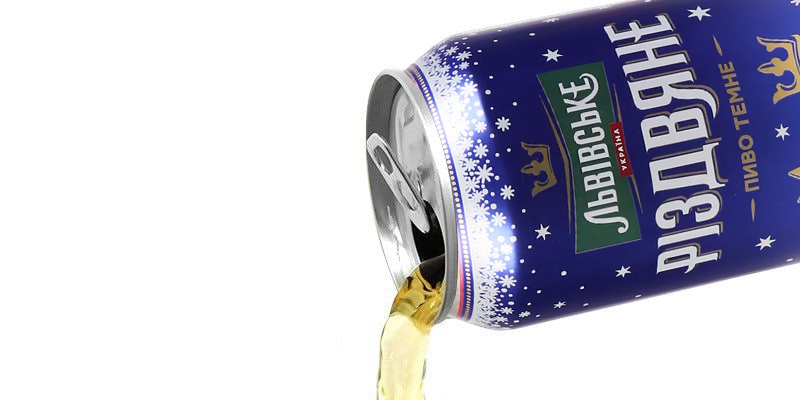
О, а це я колись малював
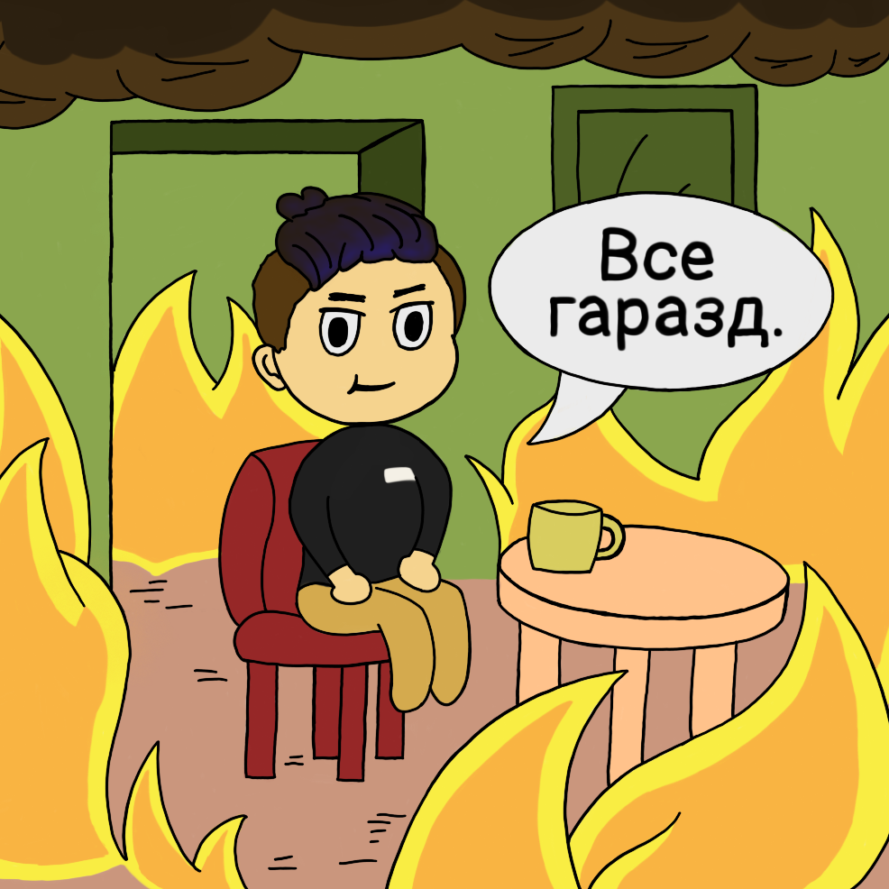Анімовані SVG зображення планет Сонячної системи (і Плутон)
 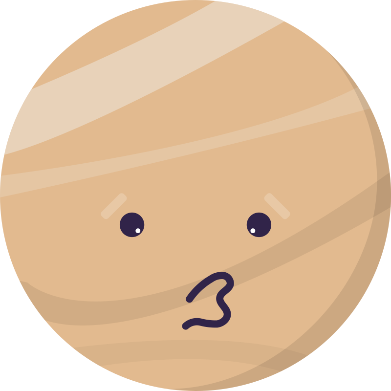
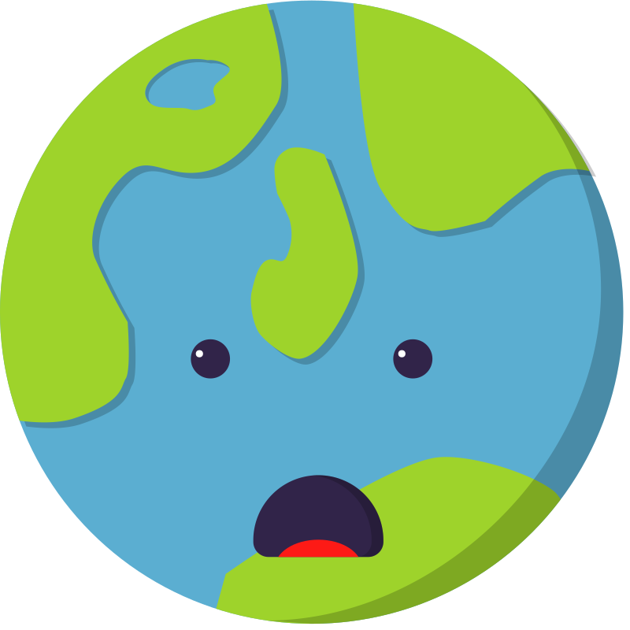
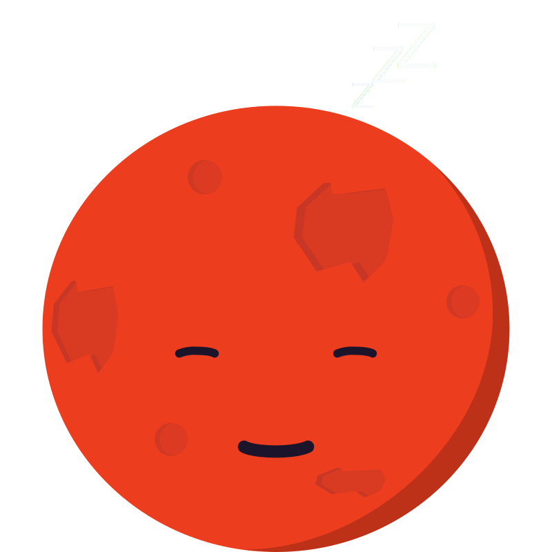
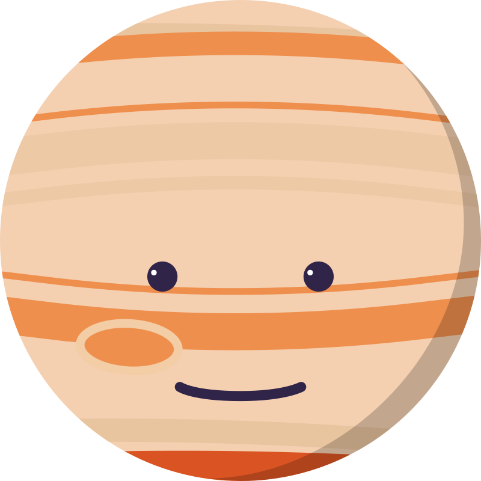
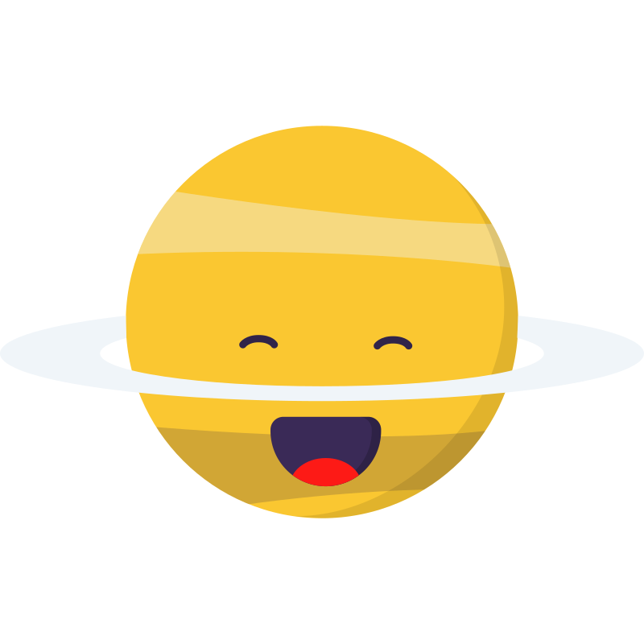
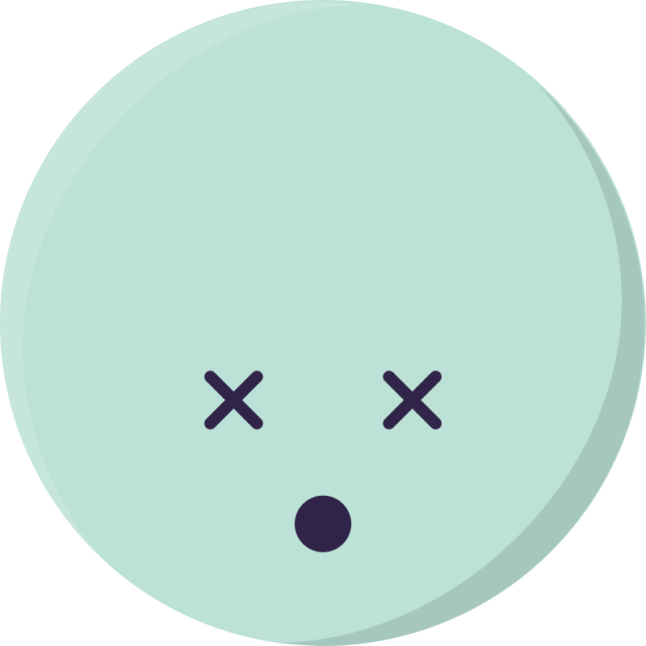
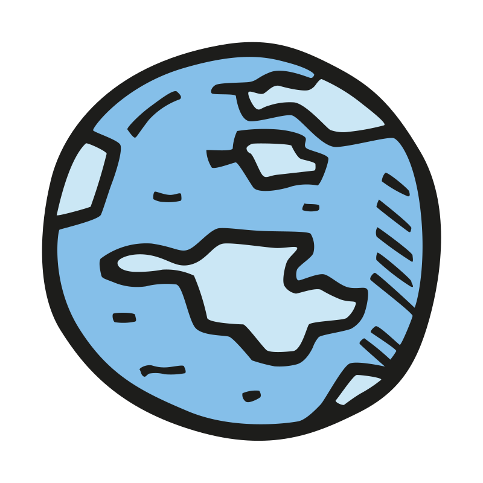
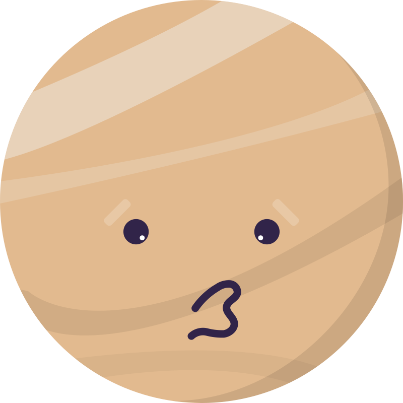
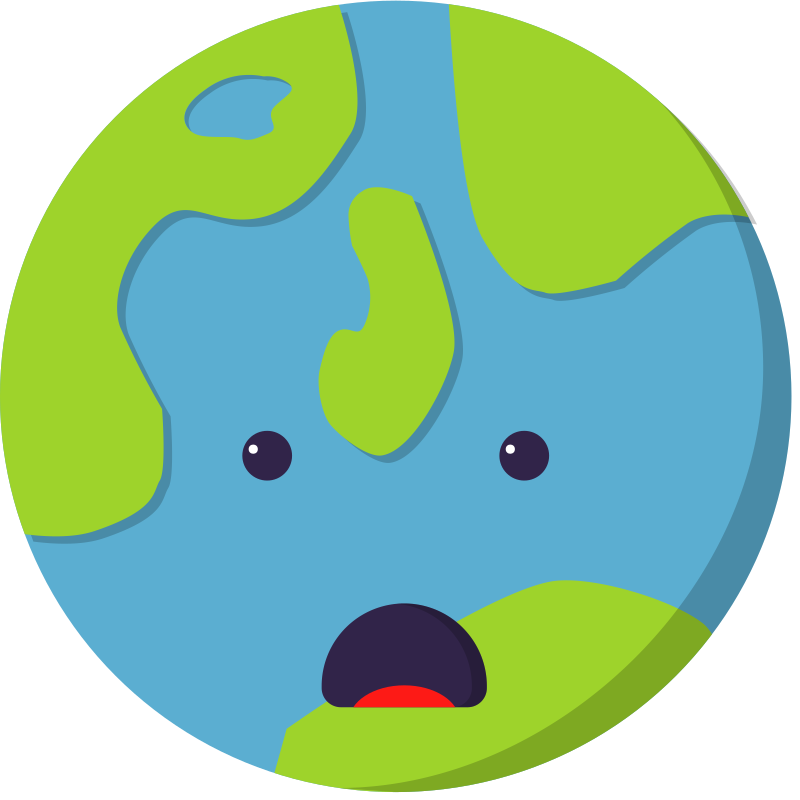
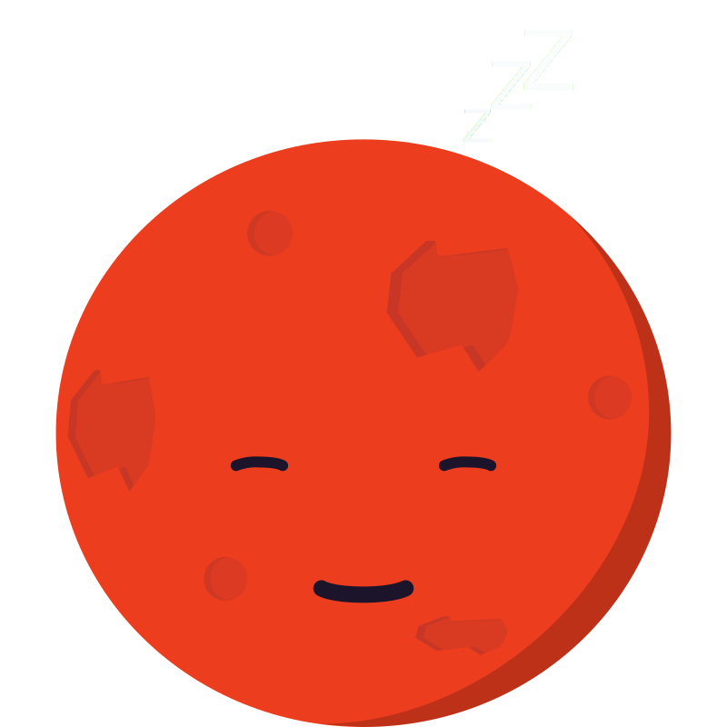
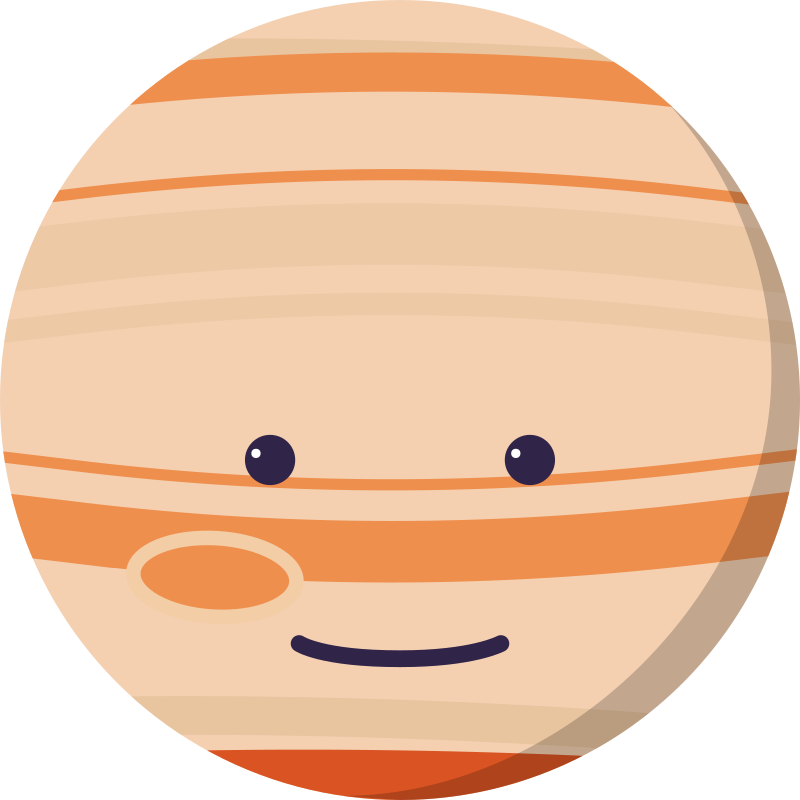
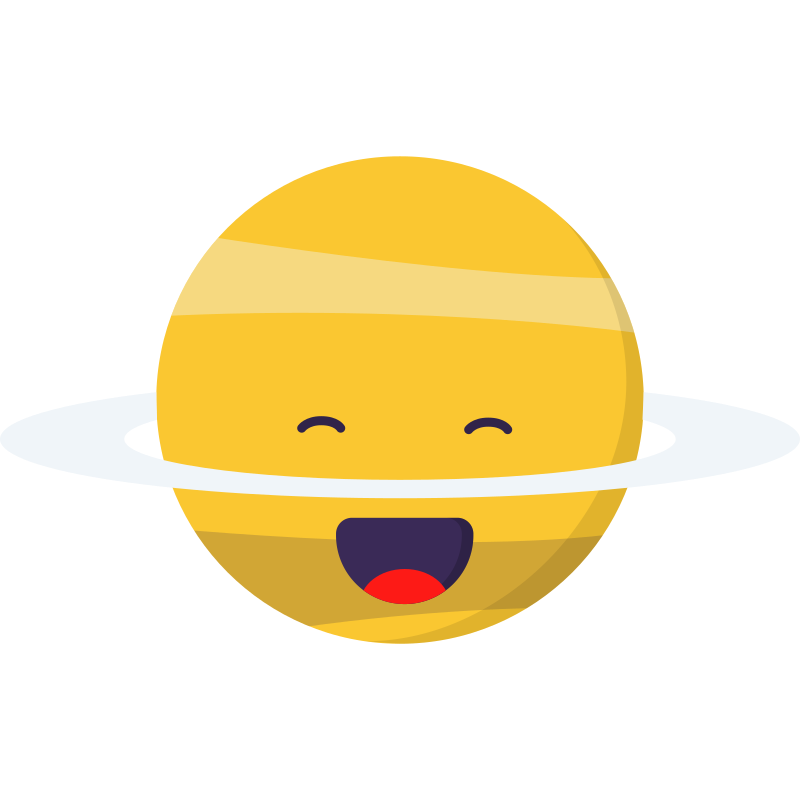
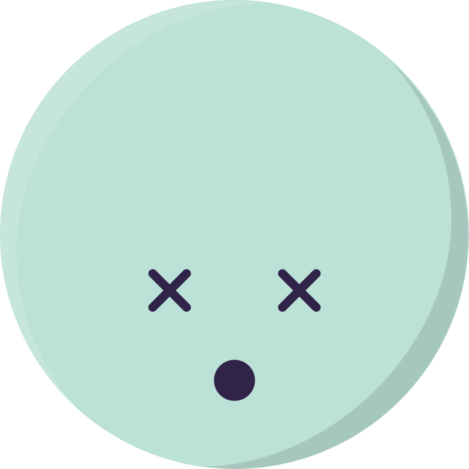
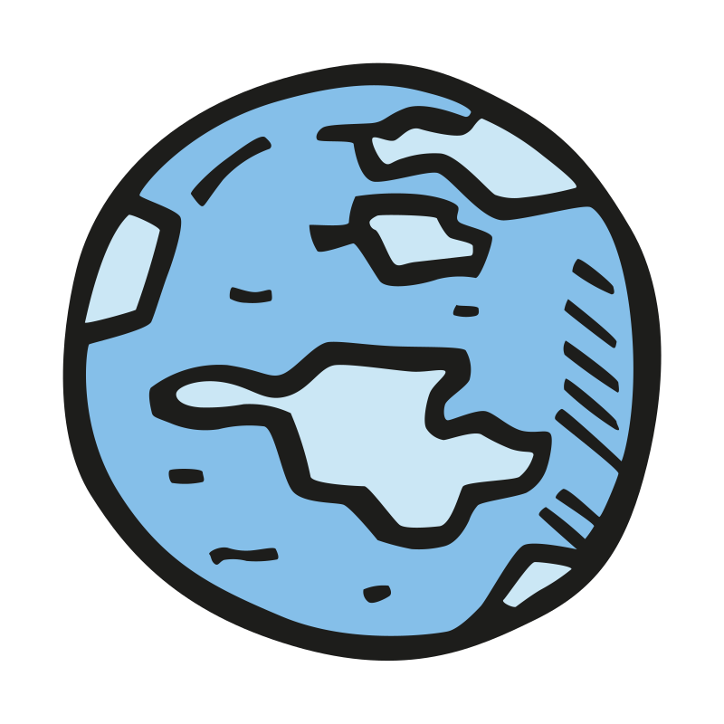
Простіші SVG
/\ ось це я сам пробував прописати svg